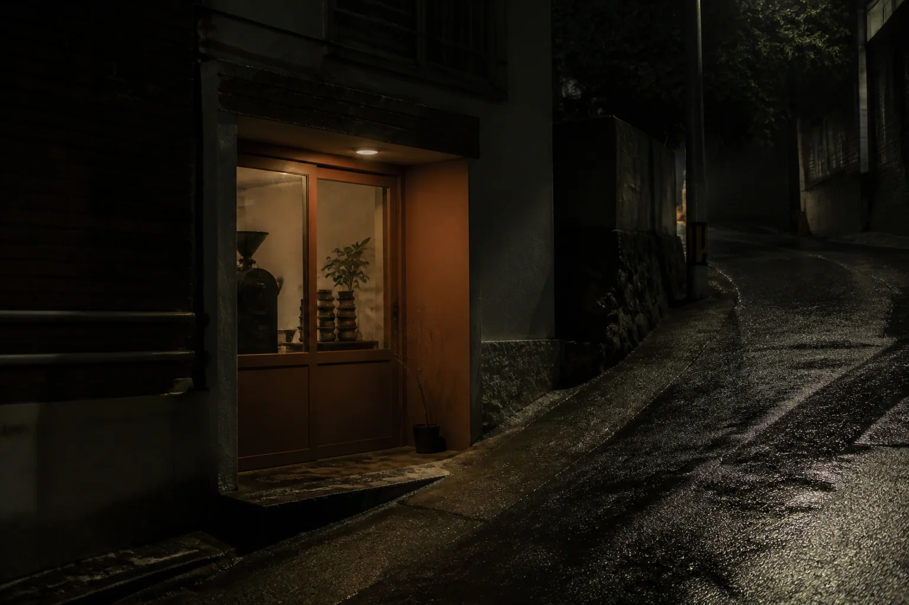

MOST USED / NIGHT
“보일러가
조금 추워요.”
현재 화면에서 바로 온도 설정 순서와 가장 편안한 권장 범위를 확인합니다.
YOUR STAY, WITHOUT THE FRICTION
낯선 숙소에서도, 필요한 순간에 필요한 정보만.
공항에서 문을 여는 순간까지, 가장 많이 찾는 정보만 먼저 보여줍니다.
STREET / 01
편의점 맞은편, 조명이 들어온 벽돌 문이 첫 번째 표식입니다.
07 SECSTREET → DOOR
02 / INSIDE
MOST USED / NIGHT
현재 화면에서 바로 온도 설정 순서와 가장 편안한 권장 범위를 확인합니다.
03 / NEARBY
검색 결과를 늘어놓는 대신, 지금 시간과 걸어서 갈 수 있는 거리를 기준으로 큐레이션합니다.

21:30까지 열려 있고, 긴 여행 뒤 혼자 앉아 있기 좋은 작은 로스터리.
04 / WHEN YOU NEED US
가이드는 먼저 답하고, 사람이 필요한 순간에는 호스트 연결을 숨기지 않습니다.
호스트에게 연락하기 ↗